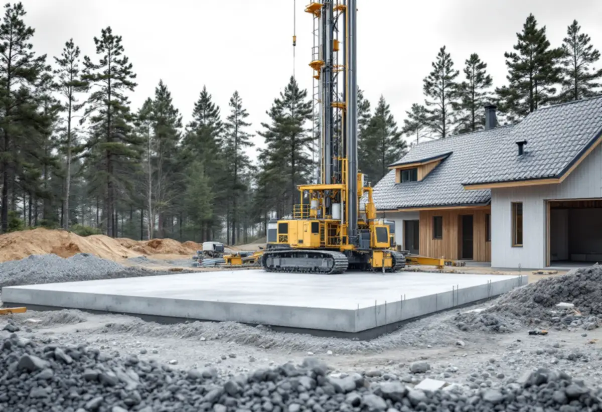

Platsbesök
Vi tittar på tomten, avståndet till vattnet och var huset kan stå.
Ett nytt hus på Mälaröarna börjar sällan med ritningarna. Först ska det visa sig om platsen får bebyggas, om strandskyddet berör tomten och hur bygget ska hållas rent i en kommun som i sin helhet ligger inom skyddsområde för dricksvatten. Geal Entreprenad AB bygger nya hus och större tillbyggnader som total entreprenad, och här är de frågor som kommer först i Ekerö kommun.
Ekerö kommun rekommenderar ett förhandsbesked innan du söker bygglov för ett nytt bostadshus där det inte finns någon detaljplan. Ligger fastigheten inom detaljplan går det inte att söka förhandsbesked, och finns det redan ett hus på tomten kan en tillbyggnad sökas som bygglov direkt. Ekerökartan visar vilket som gäller för din fastighet.
Ansökan är enkel: en karta eller ett flygfoto i skala 1:10 000 med platsen markerad och en situationsplan i skala 1:2000 med den tänkta husplaceringen. Grannarna behöver du inte fråga själv, det gör kommunen. Ibland behövs fler utredningar, till exempel om avloppet. Kommunen använder översiktsplanen som riktlinje och kan komma fram till att området först behöver en detaljplan.
Ett positivt besked betyder att platsen kan bebyggas, men husets storlek, utseende och exakta placering prövas i bygglovet. Ofta kan en tomtplats styckas av, men det beslutar Lantmäteriet. Beskedet gäller i två år från att det vann laga kraft. Kommunen ska besluta inom tio veckor från att ansökan är komplett och kan förlänga med högst tio veckor till, och ansökan räknas som komplett först när remissinstanserna har svarat. De flesta besluten fattas av byggnadsnämnden, som träffas tio gånger per år.

Det generella strandskyddet är 100 meter från strandkanten men på vissa ställen upp till 300 meter, skriver kommunen, och det gäller både på land och i vattnet. Inom strandskyddat område är det förbjudet att uppföra en ny byggnad eller att gräva och på annat sätt förbereda för en, och det gäller även komplementbyggnader. Det är också förbjudet att utöka den privata zonen med till exempel gräsmatta, rabatter eller utemöbler.
För att få dispens krävs särskilda skäl. Till ansökan ska bland annat en beskrivning av skälen, situationsplan, planritning och elevationsritning bifogas, liksom en beskrivning av växt- och djurlivet och uppgifter om servitut eller gemensamhetsanläggningar. Vill du bygga inom strandskyddat område rekommenderar kommunen att du söker dispens innan du söker förhandsbesked.
Ekerö har sedan 2008 varit en del av Östra Mälarens vattenskyddsområde. Sedan Södra Mälarens vattenskyddsområde började gälla 1 juni 2024 ligger hela kommunen inom skyddsområde för vattentäkt, och föreskrifterna gäller även för privatpersoner. För Södra Mälaren finns föreskrifterna hos Länsstyrelsen.
I Länsstyrelsens föreskrifter för Östra Mälaren omfattar den primära skyddszonen bland annat landområdet intill 50 meter från strandlinjen vid medelvattenstånd. Mark- och anläggningsarbeten inom tomtmark får utföras utan tillstånd, men utfyllnad och återfyllnad av schakt får bara göras med rena massor. Ny lagring av mer än 250 liter brandfarlig vätska, som diesel, ska i den primära zonen ha ett sekundärt skydd, och hantering av kemikalier och färger får inte ske om den kan förorena vattnet.
På en byggplats nära stranden påverkar det var maskiner tankas, var färg och lim förvaras och vilka massor som körs in till grunden. Vi går igenom föreskrifterna för just din tomt innan etableringen planeras.
Ska huset värmas med berg-, jord- eller ytvattenvärme krävs tillstånd från kommunen innan anläggningen installeras. En luftvärmepump kräver inget tillstånd. Till ansökan hör en skalenlig situationsplan med energibrunnarna inritade, gärna i skala 1:400 eller 1:500, och kommunen erbjuder en bergvärmekarta utan kostnad. Enligt Östra Mälarens föreskrifter får nya energianläggningar i den primära skyddszonen inte anläggas utan tillstånd.
Grannarna ska få yttra sig. Där det saknas kommunalt vatten och avlopp räknas alla grannar vars fastighetsgräns ligger närmare än 30 meter från anläggningen som berörda, där alla är anslutna gäller 20 meter. Miljöenheten kontaktar grannarna, som har två veckor på sig. Miljönämnden kräver att energibrunnar anläggs enligt SGU:s Normbrunn 16.
Kommunen påpekar att Ekerö ligger inom ett område som för länge sedan låg under havsytan, så djupt grundvatten kan vara påverkat av salt. Kloridhalten ska mätas under borrningen, och visar den mer än 100 mg/l ska borrhålet tätas. Läs mer om att bygga nytt hus och om arbetssättet under byggfirma.
Vi tittar på tomten, avståndet till vattnet och var huset kan stå.
Ekerökartan visar detaljplan och vi bedömer om dispens behövs.
Karta och situationsplan tas fram för kommunens prövning av platsen.
Grund, stomme, värme och installationer redovisas var för sig.
Bygglov, avlopp och bergvärme söks i rätt ordning.
En kontakt för alla hantverkare fram till slutbeskedet.
Rotavdraget är 30 procent av arbetskostnaden, högst 50 000 kronor per person och år och högst 75 000 kronor tillsammans med rutavdrag. Du ska äga bostaden när arbetet görs, och material och resor ger inget avdrag.
Ett helt nytt hus ger inte rotavdrag. Bygger du i stället till ett befintligt hus ger tillbyggnaden avdrag om den sitter ihop med ytterväggen till minst 75 procent eller har en dörr emellan, och markarbeten för husets värmeförsörjning kan ge avdrag. Vi gör avdraget direkt på fakturan där det gäller.
Grundläggning, avståndet till vatten och avlopp, valet av värmekälla och hur långt material ska transporteras väger tyngst. Efter ett gratis platsbesök får du ett skriftligt kostnadsförslag.
Total entreprenad för villan.
Byggfirma →Takbyte, takbesiktning och plåtarbeten.
Takläggare på Ekerö →Stenhamra, Kungshatt och Adelsö.
Takrenovering på Ekerö →Utanför plan, strandskydd och eget avlopp.
Attefallshus på Ekerö →Anmälan, mjukt vatten och eget avlopp.
Badrumsrenovering på Ekerö →Väder, säsong och torktider på öarna.
Fasadmålning på Ekerö →Egnahem, villaområden och äldre gårdar på Ekerö.
Fasadrenovering på Ekerö →Sommarvillor och 60-talsvillor på Ekerö.
Fönsterbyte på Ekerö →Villor i Stenhamra och omgjorda sommarhus.
Golvläggare på Ekerö →Slipa trägolv som ligger på golvvärme.
Golvslipning på Ekerö →Vedspis, egen brunn och nya sopsorteringen.
Köksrenovering på Ekerö →Sommarvillor, stugor och villor på Mälaröarna.
Målare på Ekerö →Takvatten, solceller och plåttak på Ekerö.
Plåtslagare på Ekerö →Altan, gäststuga och snickeri nära Mälaren.
Snickare på Ekerö →Kartan, solcellerna och skorstenen.
Takbyte på Ekerö →Tapet på timmer, papp och skivor.
Tapetsering på Ekerö →Kartan, inglasningen och registret.
Tillbyggnad på Ekerö →Braskamin och större fönster.
Totalrenovering på Ekerö →